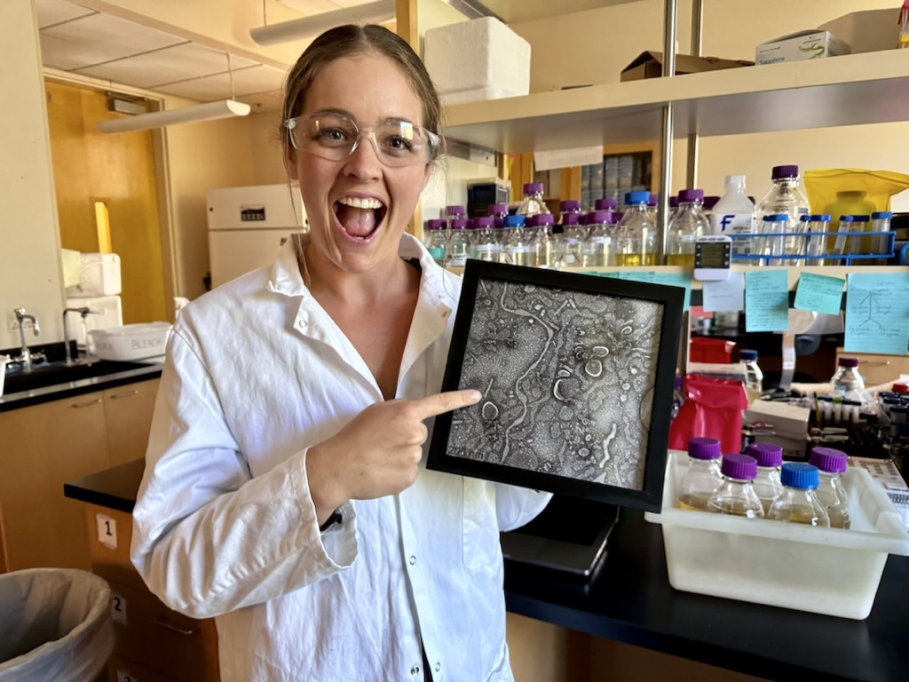
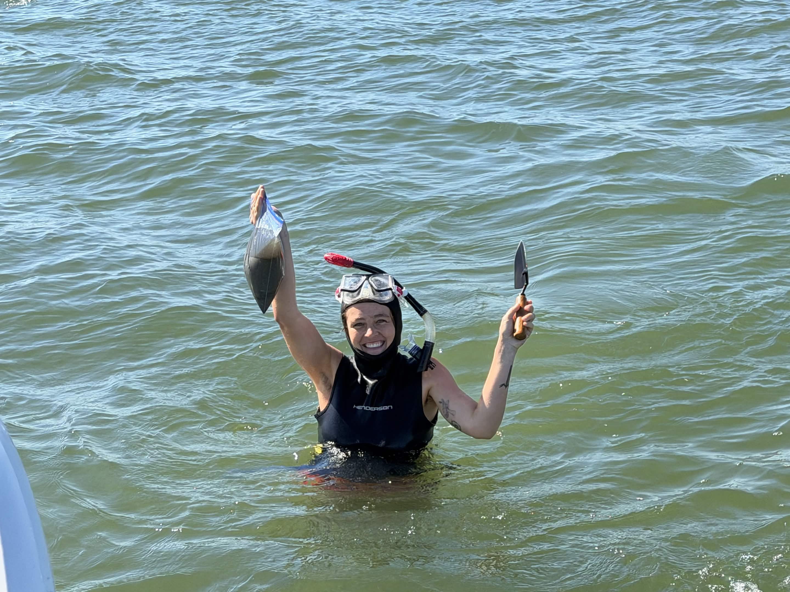
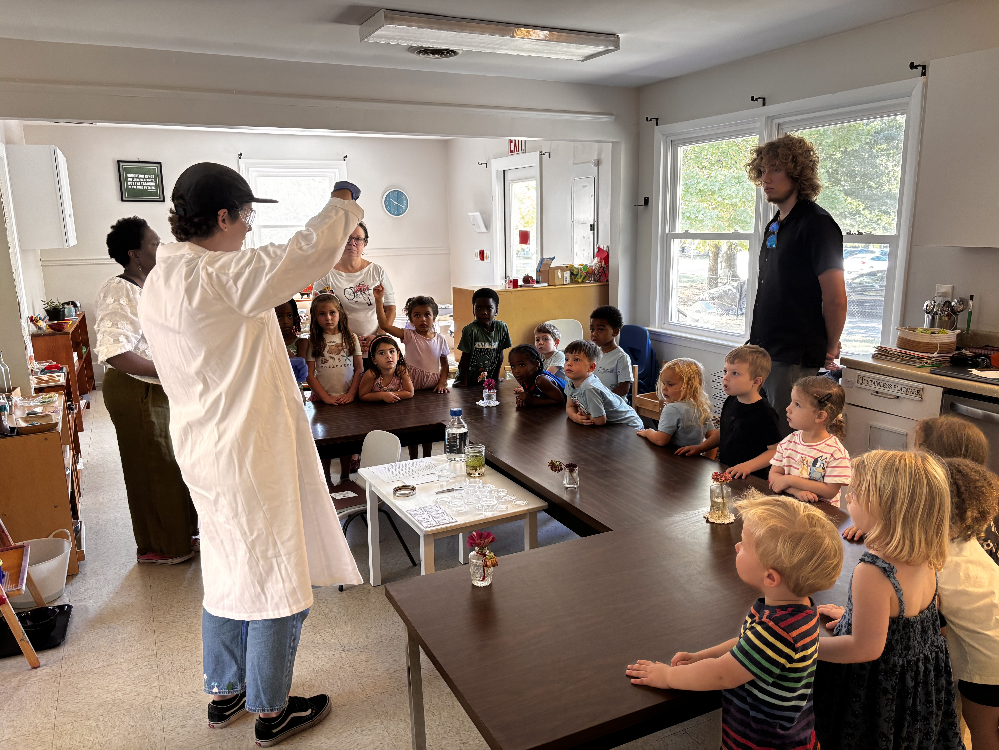
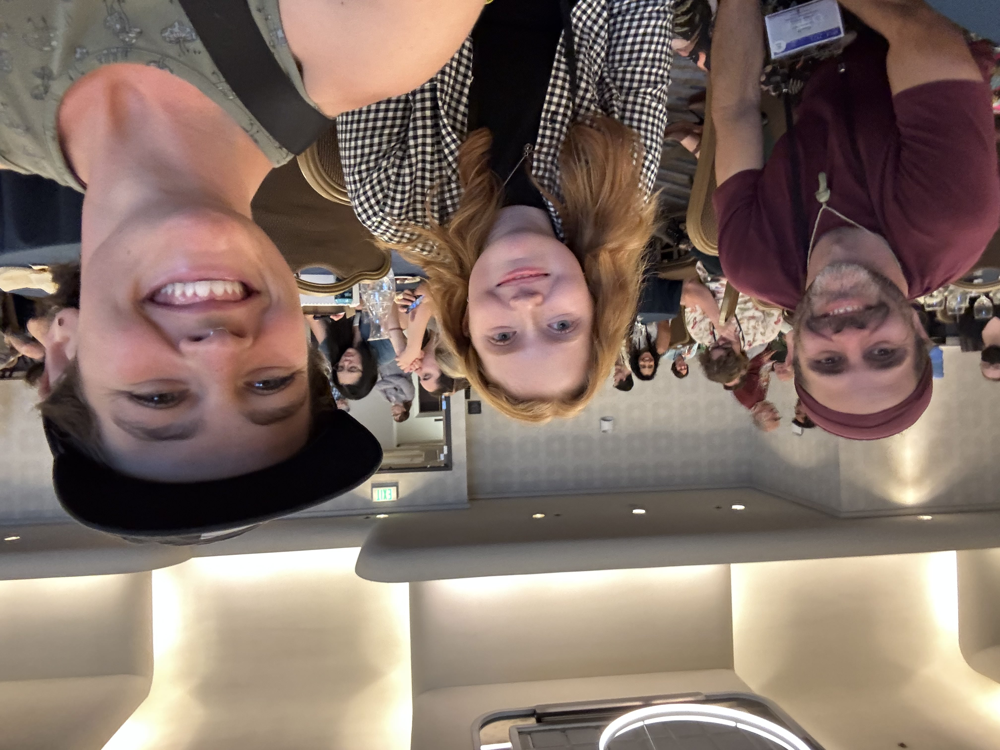
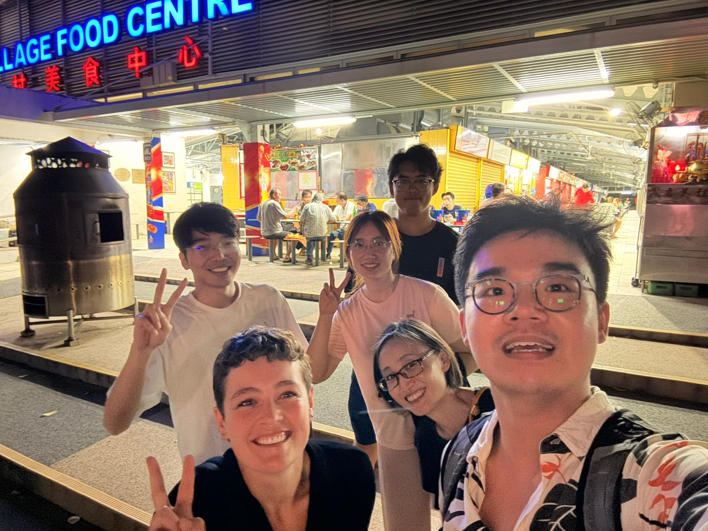
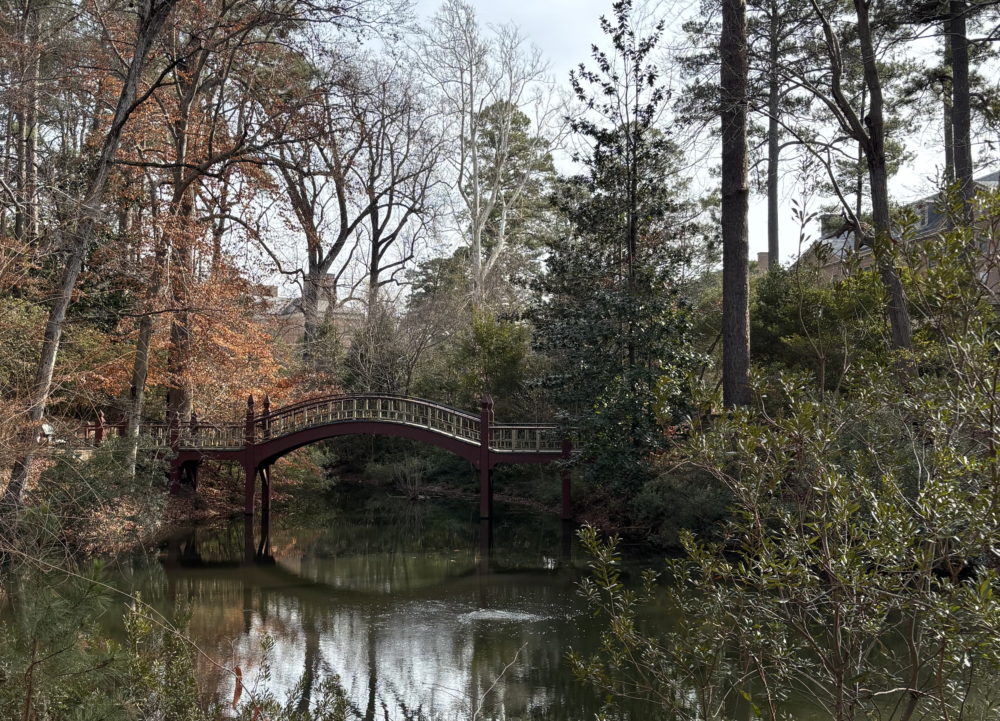
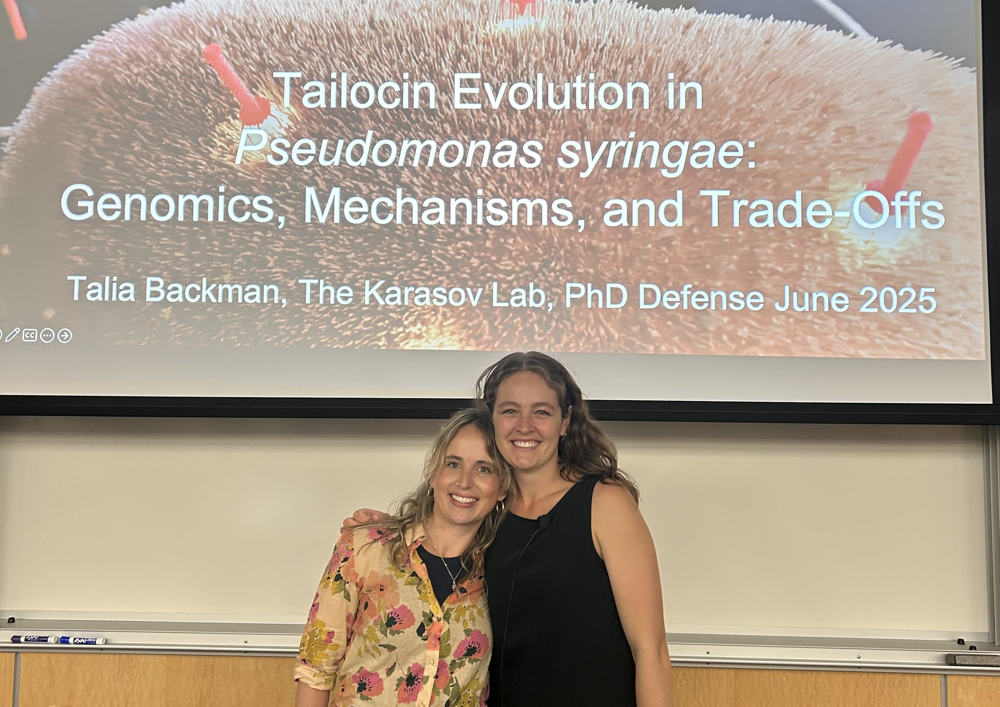

I'm a bacterial geneticist and microbial ecologist interested in how microorganisms interact with one another and modify the environments they inhabit.

I am currently a postdoctoral researcher in the TIDAL Lab at Mary & William (and yes, I insist on saying Mary & William), working with Dr. Geoffrey Zahn. My research brings together bacterial functional genetics and experimental ecology to investigate how microbial interactions influence community assembly and ecosystem function.
Much of my current work focuses on eelgrass (Zostera marina) ecosystems, where I investigate how microbial communities assemble, how their metabolic activities influence sediment chemistry, and whether these interactions can help explain why some ecosystems persist while others struggle to recover. I lead a Revive & Restore-funded project investigating microbial community coalescence and its potential applications in seagrass restoration. Independently, I initiated an international eelgrass microbiome research network connecting more than 30 researchers and restoration practitioners to investigate geographic variation in microbial communities.
I am particularly interested in connecting bacterial genes to ecological consequences. I use approaches ranging from comparative genomics and high-throughput functional genetics (including RB-TnSeq) to synthetic microbial communities and environmental microbiome analyses. Although coastal ecosystems provide an exciting starting point, the biological questions I'm interested in extend to soils, engineered microbial communities, and host-associated microbiomes.
I completed my PhD in Molecular, Cellular, and Evolutionary Biology at the University of Utah in Dr. Talia Karasov's laboratory. My doctoral research investigated the evolution of tailocins, phage-derived bacterial weapons, and the trade-offs between microbial competition and host colonization. This work led to publications in Science, PNAS, and Trends in Microbiology.
Beyond research, I enjoy teaching and mentoring scientists at different stages of their development. I am especially interested in inquiry-based learning and helping students develop the confidence to investigate questions of their own. I also volunteer as a science educator at a Montessori preschool in Williamsburg, where I develop hands-on activities encouraging young children to explore the natural world.
How do bacterial weapons, resistance mechanisms, and evolutionary trade-offs shape microbial interactions?
How do bacterial genes and interactions influence microbial community structure and function?
How do microbial activities alter environmental conditions, and can understanding these processes help explain ecosystem persistence and restoration?
Selected works
Submitted
-
In reviewRegional biogeography constrains habitat-associated bacterial communities across tropical coastal ecosystemsSubmitted to ISME Communications (2026)
Peer-reviewed publications
-
2026Persistent trade-offs balance competition and colonization across centuriesProceedings of the National Academy of Sciences (2026)
-
2024Tradeoffs and constraints on the evolution of tailocinsTrends in Microbiology
-
2024A phage tail-like bacteriocin suppresses competitors in metapopulations of pathogenic bacteriaScience 384 (6701): eado0713
-
2022DNA authentication and chemical analysis of Psilocybe mushrooms reveal widespread misdeterminations in fungaria and inconsistencies in metabolitesApplied and Environmental Microbiology 88 (24): e0149822
Recent updates
Exploring deep-sea science at the DeSSC New User Program. I'll be in San Francisco for the Deep Submergence Science Committee (DeSSC) New User Program, learning about deep-submergence research technologies and the possibilities they offer for investigating microbial life in the deep ocean. I'm particularly interested in developing deep-sea microbial research directions for a potential future expedition.
Eelgrass fieldwork begins! We completed our first eelgrass sediment collections, beginning a new phase of research investigating how sediment microbial communities influence environmental conditions and eelgrass establishment — part of the Revive & Restore-funded project I am leading, which was recently recognized as an Official UN Ocean Decade Contribution.

New students, new proposals, and preschool science. September brought several exciting developments. Two new PhD researchers joined the Zahn Lab, I submitted my Smith Conservation Research Fellowship proposal, and I began volunteering as a science educator at a Montessori preschool in Williamsburg.

I attended my first Mycological Society of America meeting and loved it!

Our PNAS paper is published! Our research on evolutionary trade-offs between bacterial competition and host colonization was published in PNAS. This project built on years of work investigating tailocins and the evolutionary constraints shaping bacterial interactions in natural populations.
Singapore, an HFSP fellowship, and a new direction. I traveled to Singapore while considering an HFSP Long-Term Postdoctoral Fellowship. Around the same time, I learned that our Revive & Restore project had received funding. After weighing the opportunities, I decided to remain at William & Mary to lead the Revive & Restore research.

Starting my postdoc at Mary & William. I joined Dr. Geoffrey Zahn's TIDAL Lab at William & Mary (or Mary & William, as I prefer). My postdoctoral research focuses on microbial community assembly and the possibility of using microbial interactions to improve ecological restoration.

PhD defended! I successfully defended my PhD in Molecular, Cellular, and Evolutionary Biology at the University of Utah. And yes, I cried my eyes out. With my PhD advisor, "big" Talia Karasov.

Get in touch
I'm always happy to hear from prospective collaborators, students, or anyone interested in microbial ecology and evolution.